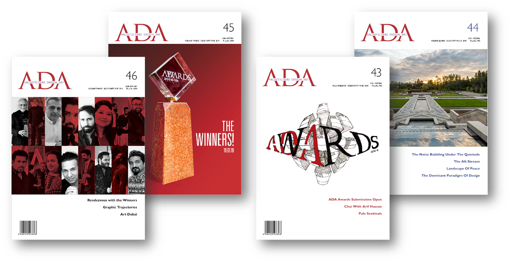
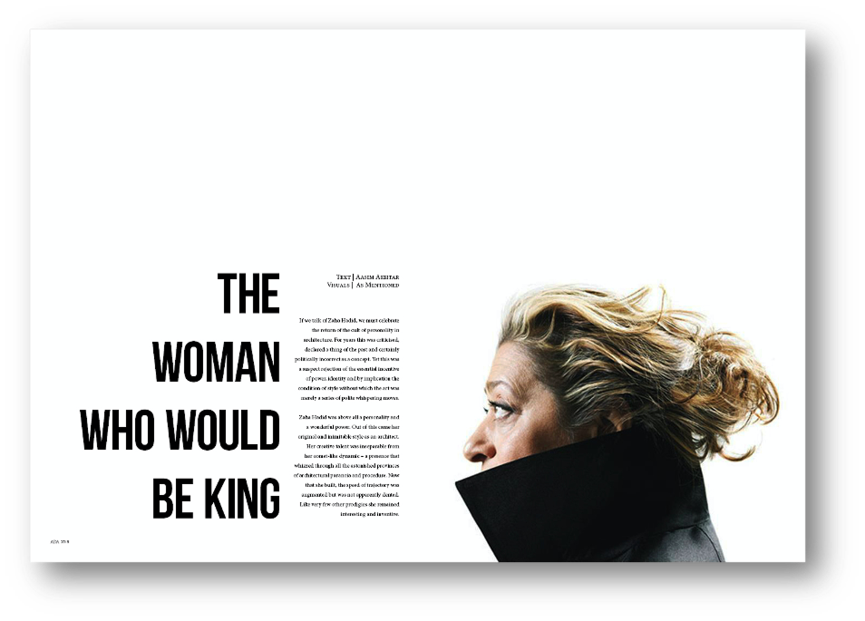
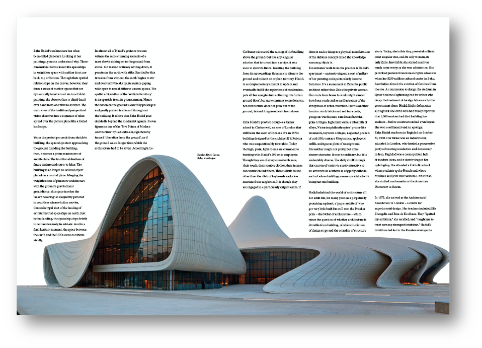
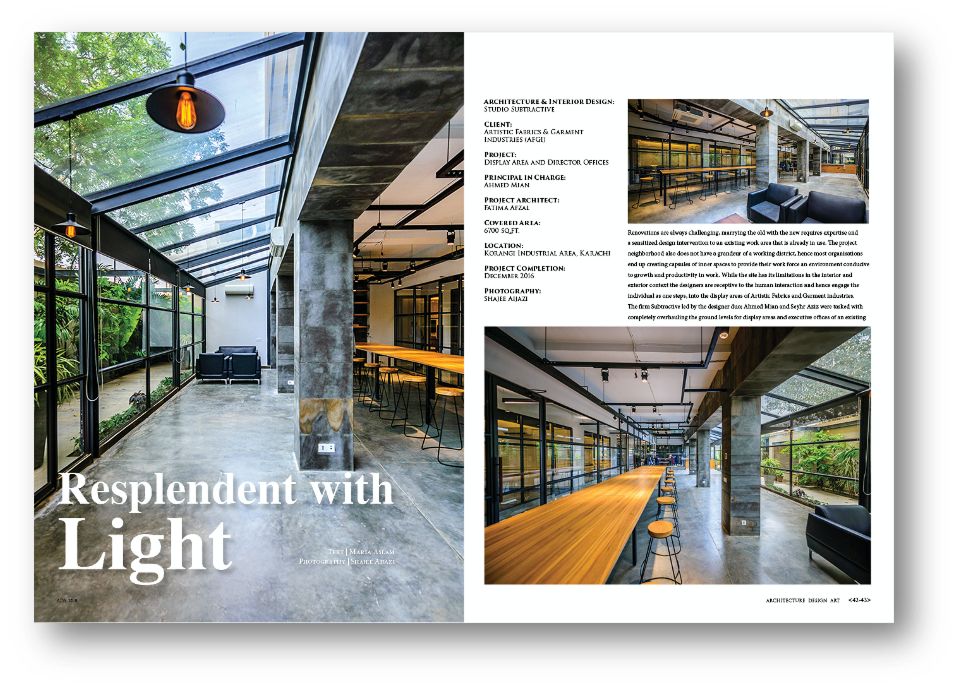
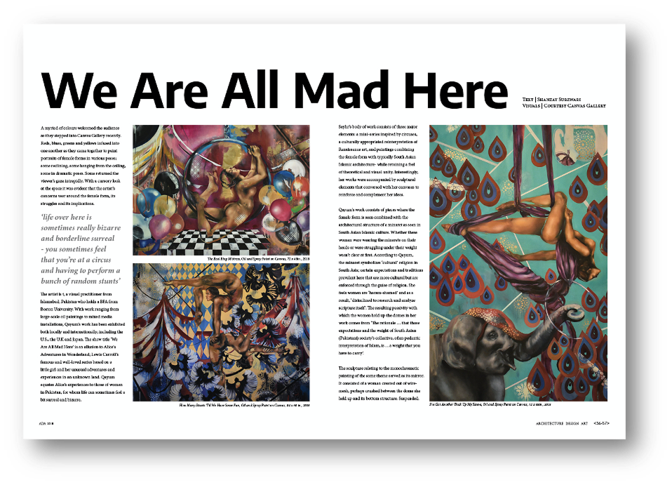

May You Live in Interesting Times
Highlights from the 58th International Venice Biennale and Pakistan Pavilion.
ReadPrint, web and collateral design for an Architecture Publication
Editorial Design · Print & Digital Layout · Web Design · Art Direction · Typography · Feature Writing & Editing · Event Production · Content Strategy
Company:
Architecture Design Art Magazine
Role:
Graphic Designer
Year:
2018-2020
Team:
Maria Aslam (Editor in Chief) Aisha Khan (Creative Editor)


Issue 44 | Subject: Zaha Hadid | Published: Dec 2018

Issue 44 | Subject: Zaha Hadid | Published: Dec 2018

Issue 43 | Subject: Seyhr Qayum | Published: Oct 2018

Issue 43 | Subject: Studio Subtractive | Published: Oct 2018
Highlights from the 58th International Venice Biennale and Pakistan Pavilion.
Read
Design for informed extremism by creative agency Animal.
ReadA dialogue series, featuring presentations by prominent minds in Pakistan’s urban planning and architectural sphere.